|
2012年しめくくりチャットの記録 |
|
||
|
2012年しめくくりチャットの記録 |
|
||
|
２０１２年１２月２９日（土） ２０：００～２２：００に、しめくくりチャットを開催しました。久々のチャットでしたが、初参加のメンバーも加え、とても盛り上がりました。ご参加いただいた方、本当にありがとうございました。 それではチャットの模様をダイジェストでお伝えします。 (2013/1/3) |
||
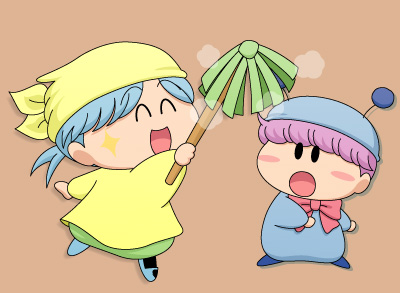
↓今回もたくさんの方にご参加いただきました！
スマホからの参加者もいたりと、時代の流れを感じます。
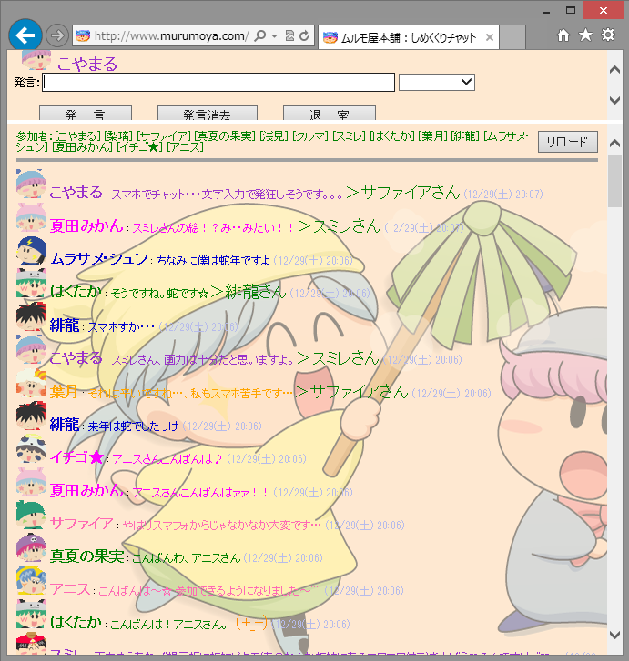
↓チャット翌日にTOKYO MXで大物妖精Mの再放送があり、
ムルパピネタで大いに盛り上がりました♪
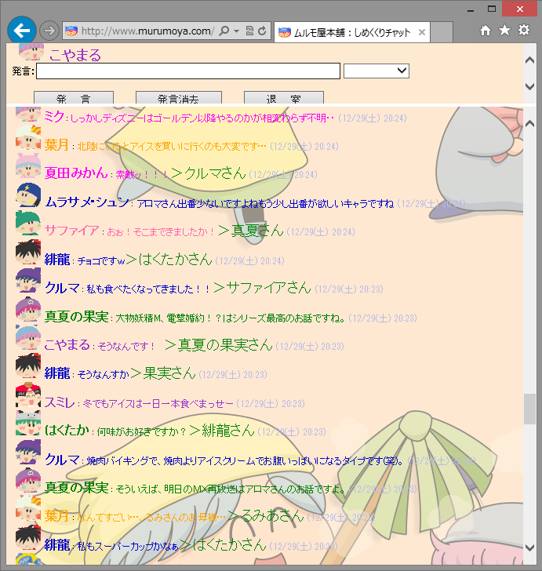
↓いよいよなりきりチャットのお時間。
まずは担当決めを行います。
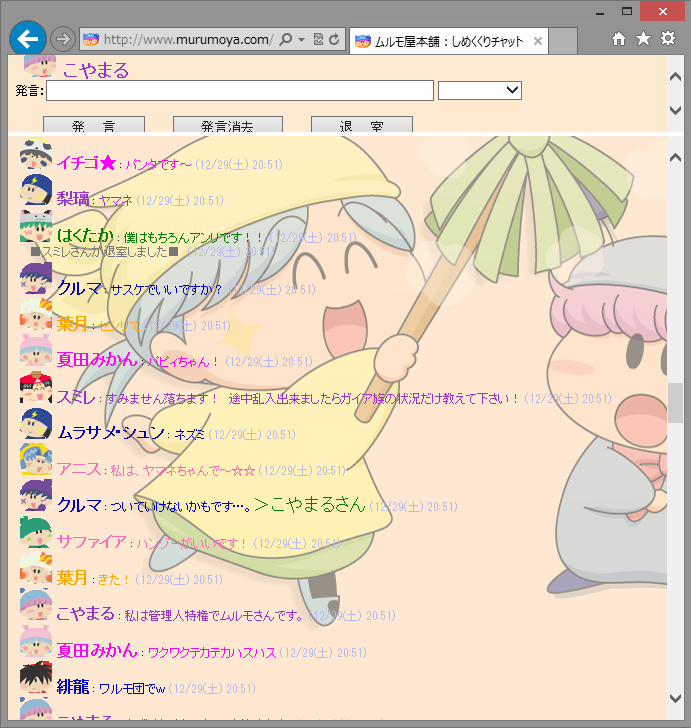
またも主役不在か！？と思われましたが、イチゴ★さんに
しっかりミルモを演じていただきました。
|
★出演者紹介（五十音順）★ アンナ：レインボーさん |
|
～今回のなりきりチャットのテーマ～ ・その花を摘んだ者の恋が成功する伝説の花『ココロフラワー』 |
↓開始直後です。みんなでどんな風にストーリーを
進めるかで右往左往してます(^^;。
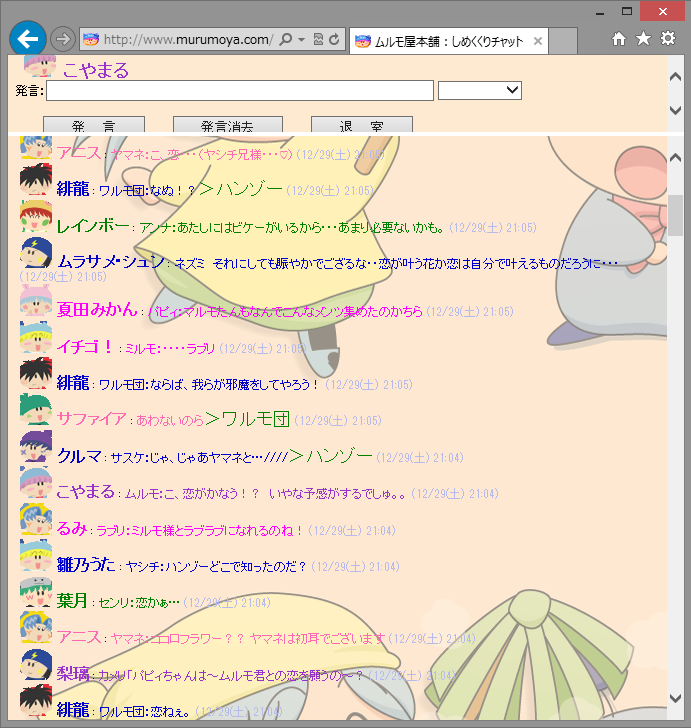
↓何やらあちこちでいい雰囲気になっていますね。
大混乱の展開です(笑)。
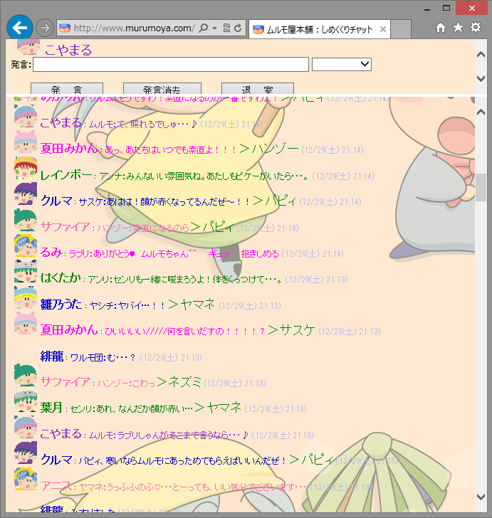
↓状況を見かねて、フィアさんがリーダーシップを発揮しました。
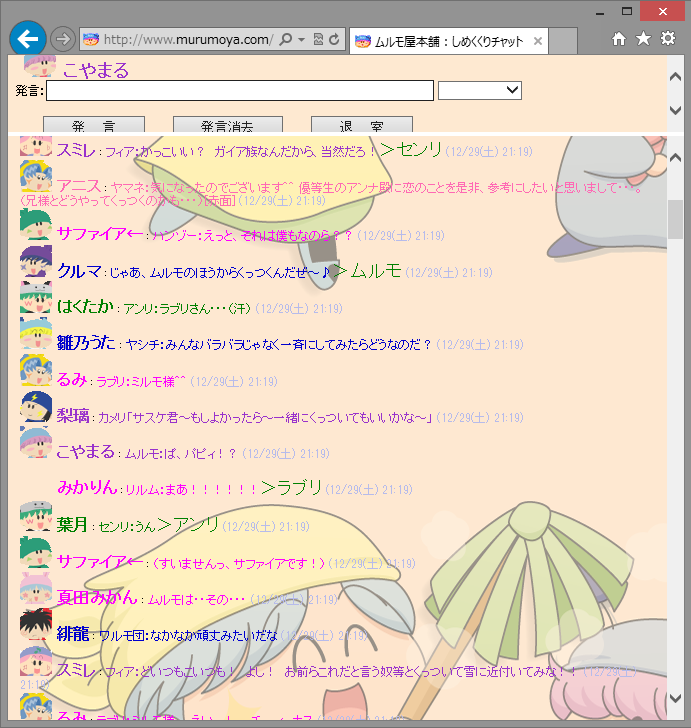
↓ココロフラワーの寸前でなりきりチャット終了。。。
最後はパピィがうまく摘めたのかな？
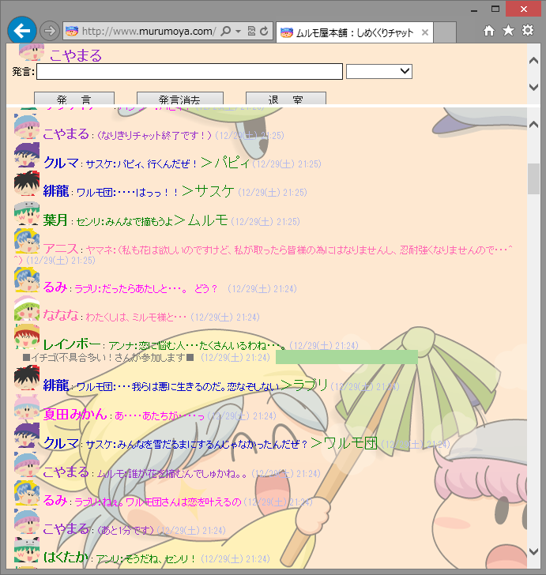
↓チャットの反省会です。
今回の大賞は、ムフフな展開を作り出したるみさんに！
その後も声優さんの話題で盛り上がり、チャットは幕を閉じました。
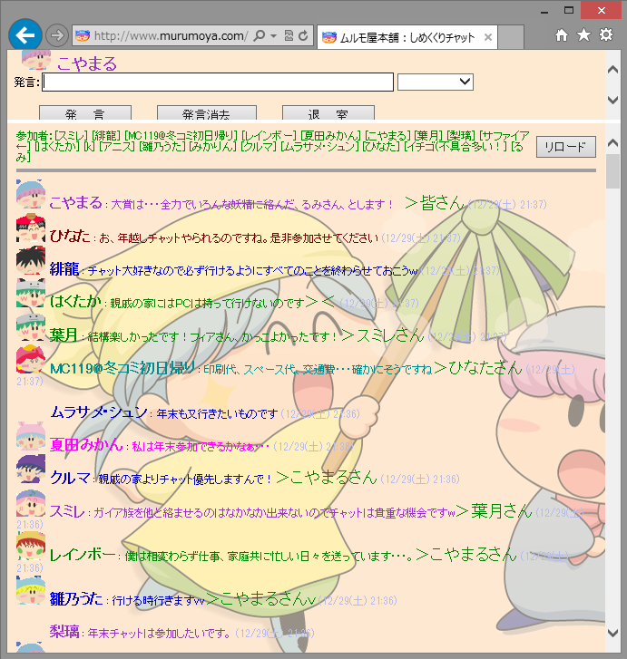
↓１２月３１日 ２３：３０からもしめくくりチャットⅡを開催し、
皆さんと新年に変わる瞬間を共にしました^^。
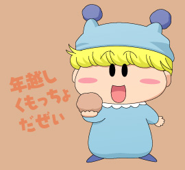
↓年越しの瞬間は恒例のなりきり挨拶で盛り上がりました♪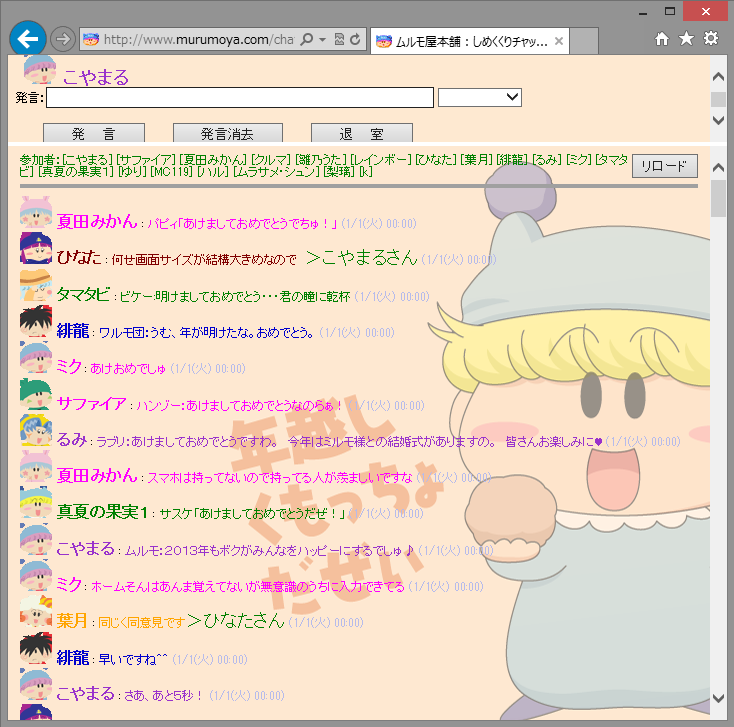
今回も皆さんのお力により、とても楽しいチャット会となりました。
２０１３年が皆さんにとって楽しい１年になりますように！
 |